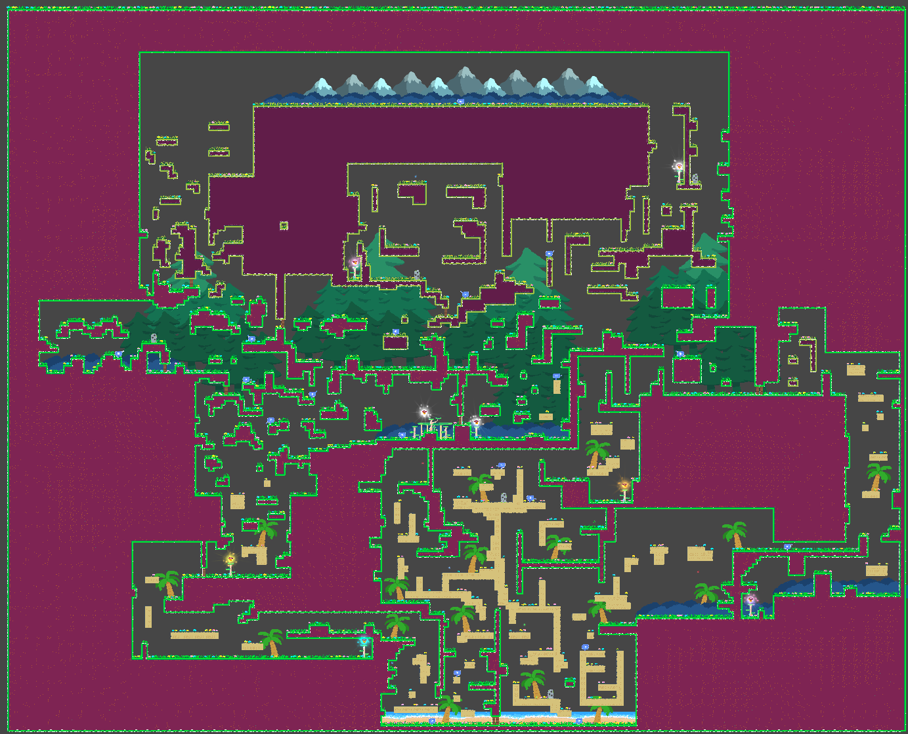
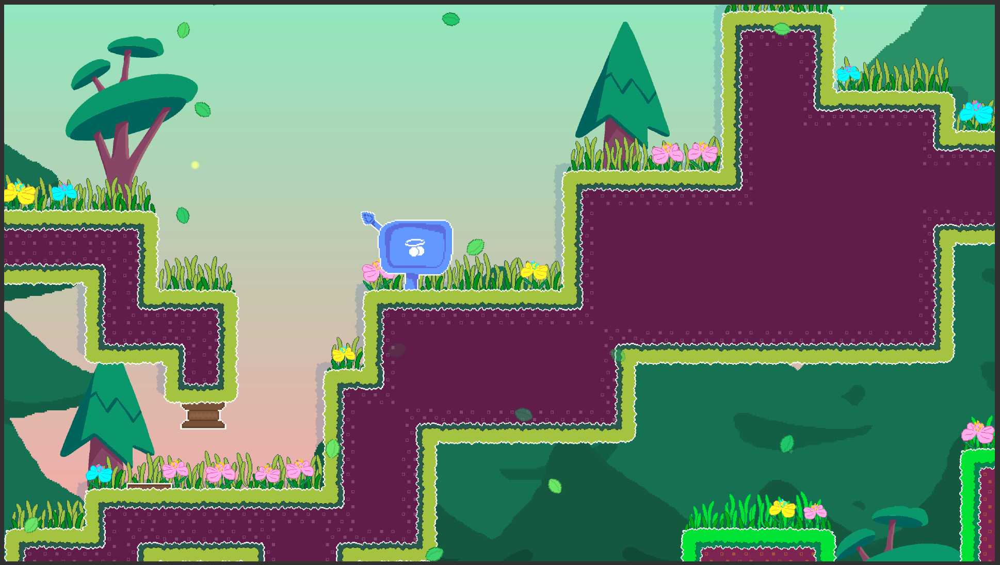

Jenny's Adventures
Jenny's Adventure is a 2D platformer where you guide Jenny, a cat, through an interconnected world of biomes. Use abilities like wall jumps and sprints while managing stamina to explore and collect flowers. Focused on platforming and discovery, it offers a relaxing, combat-free experience.

Technical Breakdown
Platforming controls
Fine tuning the platforming controls was key for creating a good platformer. Controls needs to be responsive enough for precise movement.
This game features a slightly different jump mechanic than most platformers. Players need to hold down the jump button and then release to jump.
Releasing the button in the correct timing window leads to Perfect Jump.
Other than that, game features other common platforming controls as well, like, wall run, sprint, ledge grab etc. All this provide players with a wide tool of moves to navigate the environment.
Other than that, game features other common platforming controls as well, like, wall run, sprint, ledge grab etc. All this provide players with a wide tool of moves to navigate the environment.

Metroidvania Progression
The first major design decision that dictated the further development of the game. Game world itself is just a single map.
The game features bunch of abilities which the players need to collect in order to progress through the map. There is no fixed path to follow in the map,
although your current set of abilities can dictate the areas that you can currently explore.
Game also features hidden paths and locked doors which players need to open, in order to create an alternate path to an area.
Game also features hidden paths and locked doors which players need to open, in order to create an alternate path to an area.

Unity Tileset
To build the world map, Unity Tileset is used. It makes creating and testing huge areas of the map really fast and efficient.
A bunch of rules can be set on how the tileset will be painted. Features like hidden paths, different areas etc. were a lot easier to implement using the tileset.